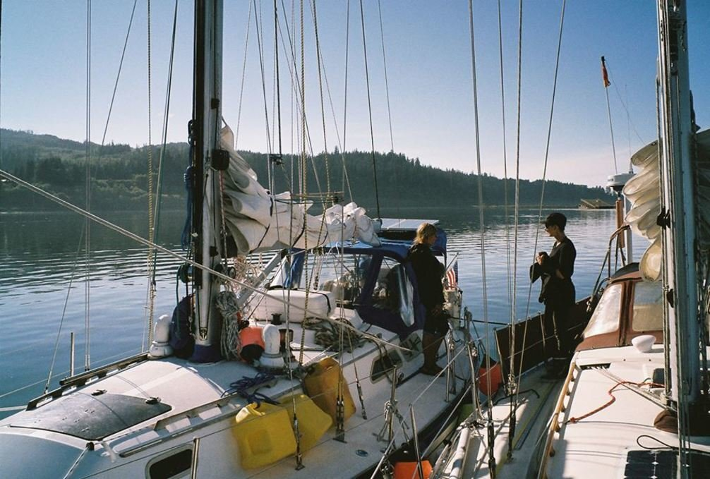
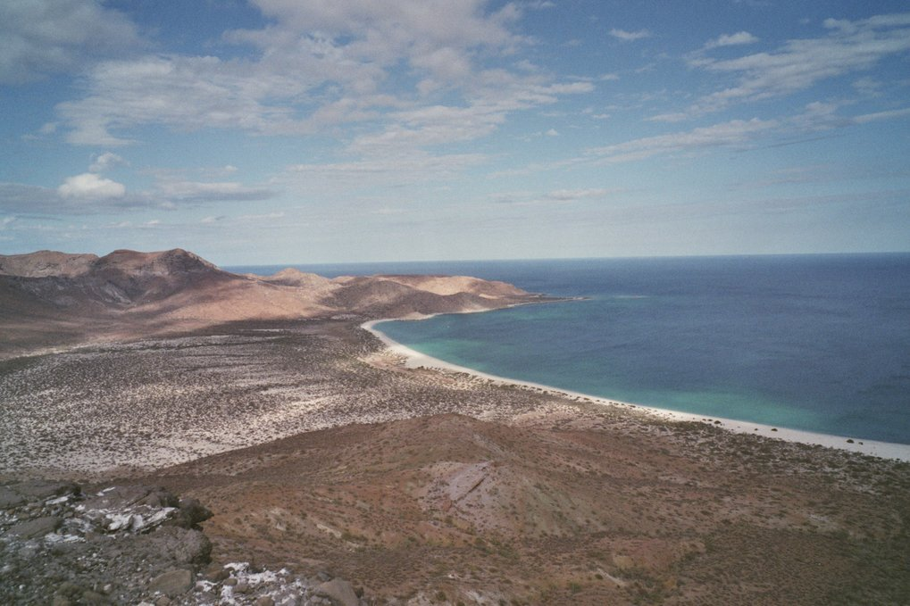
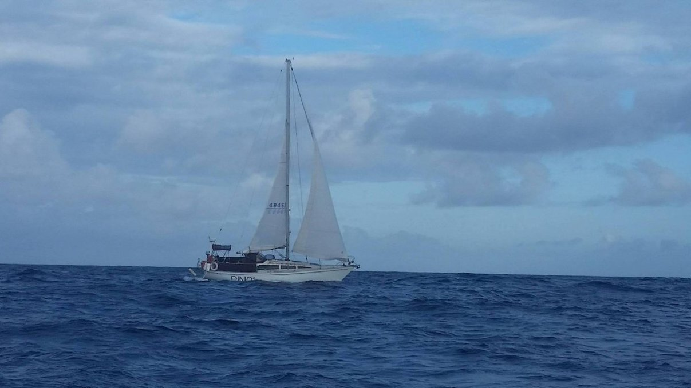

lost logbook
Lost logbook transcripts
While cleaning up the boat, Devine found two small black notebooks. We started paging through them, to see if we should keep them. The notebooks were full of sketches, interspersed with shopping lists, and incomplete logs from earlier sailing trips we'd done. We found logs detailing our very first attempt at sailing offshore, our sail down the US West Coast and Mexico, and our passage from Tonga to New Zealand.
We read the logs, and decided to transcribe and publish them online. Because the logs are incomplete, we added new content to provide context. We also appended commentary, to help clear up what is happening, and to explain why we did what we did.
- Sailing to Hawaii attempt
- Sailing down the US West Coast
- Sailing Baja California
- Sailing from Tonga to New Zealand
When we bought pino in January 2016, we already knew that we wanted to take it offshore. Our goal was to go to Japan. That same year, we made plans to sail there via Hawaii.
We had never sailed offshore, and we thought it safer to invite a third crew member aboard. We invited a friend who had some sailing experience, but the 3 of us were green sailors. We spent the summer preparing the boat for the trip.
In early July, we stopped in victoria (Cadboro Bay) and left late that same evening for our trip to Hawaii, riding the tide out of the Juan de Fuca Strait.
Sailing to Hawaii attempt
Evening of July 6th
This is our first overnight sail. We are close-reaching in 20-30 knots of wind. We are taking turns on watch, with each shift lasting 2 hours. Because of the dark, we had trouble telling the lights onshore apart from those of passing cargo ships. Devine undid two reefs by themself in the dark while on watch.
Some hours later. We are arriving to the mouth of the Strait of Juan de Fuca soon. We can see Cape Flattery ahead. The seas are calm, with long, low swells. There is some wind, an improvement from the 0-5 knots we had earlier. I am listening to the Hitchhiker's Guide to the Galaxy audio book. The skies are clear, our solar is performing well. Last night's sail was cold and wet. We wore our foul weather gear, with an army blanket laying over our legs to keep warm. I wonder if there will be wind outside of the Strait. The forecast calls for no wind, but we shall see...
July 7th
No wind at the mouth of the Strait, as predicted. We are stuck in thick fog near Cape Flattery. The scene is nightmarish. We are sitting in the dark and cold, with little to no visibility. Birds or bats are circling the boat, making high-pitched noises. We could also hear whales surfacing near the boat. We're worried that they'll get too close to Pino.
I saw a cargo ship in the distance, its light cutting through the fog. Like the whales, we hoped that it too would stay away.
The wind returned at around 0400, in strength and out of the south. We are pointing west, forced to go further offshore. We can't point south because of the ferocity of the wind (25-30 knots). The waves are getting bigger. Someone had to constantly occupy the helm to better surf up and down the huge swells. The rain poured heavily then too. No matter what we tried, we could not progress southward in any way. We are worried, because the waves keep growing, and because we don't want to go too far west.
Later. The three of us are exhausted, we can't eat or sleep. cooking on the stove in this weather is impossible. We have made the decision to go back to the entrance to the Strait, no easy task. We noticed the boom halyard was loose, but no one wanted to go up on deck to fix it.
While we were heading back, a humpback whale surfaced just a few feet from Pino's side. I screamed, because of how dangerously close it was but also because I'd never seen a humpback whale before. We battled the waves all night to return to the Strait. We couldn't see the land with our eyes because of the thick fog, we relied entirely on Navionics.
We arrived in Port Renfrew just before dark, and dropped anchor in the bay. The 3 of us were terribly sleep deprived, and physically exhausted. We came to the conclusion that sailing offshore was masochistic and that we are creatures of comfort. We don't belong here.
July 8th
We lifted the anchor and left Port Renfrew, moving eastward. We motored for a few hours through fog, our eyes on the radar, with the aim to go to Sooke. Halfway there, we decided to stop in Clallam Bay to fuel up and to maybe give this trip another good try. The weather was wet and cold still. We realized during the transit that we could have used a piece of Sunbrella to close the gap between the dodger and bimini to keep the rain off our heads. This piece of fabric was on the boat but we didn't know what it was for.
We tried to make a makeshift rain catcher for fun and to pass the time. We arrived at Olson's Resort to find that all the boats moored there were fishing boats. We couldn't see the fuel dock anywhere, and they wouldn't answer our hails on the VHF. And so, we went to dock wherever there was room and Devine went for a walk ashore to find it. Devine found the harbormaster and the location of the fuel dock. The harbormaster assured us that the depth at the fuel dock could accommodate Pino's deep draft. As we neared the dock, the number on the depth sounder kept going down, and down until it read zero and we touched bottom (the bottom was mud). Pino spun around in place for a second, before backing up and docking back to where we were before with plans to fill and ferry the Jerry cans by hand instead. One of the workers at the station offered to drive us back to the docks in his golf cart. We squeezed into the tiny space with the driver and our Jerry cans. Everyone took notice of us, the only boat larger than 6 m (20 feet) with a mast.
We went to a small cafe nearby for lunch. We tried to download grib files again to see the weather, but no luck. The cafe was full of fishermen and harbour workers drinking beer and exchanging stories. We wandered over to the marina office afterwards to find some WiFi. We finally got hold of the GRIB files, and saw just how strange the weather was out there. A big system covered the whole West Coast, and the red sausage was still there. We packed up our things and headed over to Neah Bay to wait out the weather.
Later. When in Neah Bay, no one seemed to agree on what to do next. Devine suggested we try and go to California, and to leap from there but I was worried about being near shore. Our friend was hesitant about the entire trip, and I didn't know how to feel. All I wanted was a good plan.
July 10th
We got up early and set out to sea. It was a beautiful sunny day. Devine & I are in a good mood. We discussed trying to go offshore again, but our friend expressed some concerns. They were worried about going out there again, worried that we'd hit another patch of bad weather. We understood their feelings, but were also saddened by them. We could only go offshore if all of us agreed, and because we didn't agree we turned back, yet again.
We headed back to Neah Bay, feeling real low, and just then we spotted Rick and Chris aboard Amiswki heading out to sea. Devine was terribly embarrassed, and visibly sad. Rick called us on VHF and we explained what was happening. We watched them sail away with heavy, heavy hearts. What we had planned for for months wasn't going to happen. We tried to keep our displeasure to ourselves, but it wasn't easy.
Our friend has every right to feel uncertain about this voyage. It's a trip with a lot of uncertainties, and we don't have all the answers. As I am writing this, we are motoring back to Neah Bay. The wind is with us, but we don't want to sail. Today is going to be a tough day. Devine & I will attempt a trip south ourselves later this year, maybe. We don't want to endanger anyone, nor do we want to make them feel bad. It's true, there are a lot of things we're not comfortable with right now and that coming onboard with us is scary due to our lack of experience. Despite all this, Devine & I are crazy determined. This isn't the end.
We are waiting in Neah Bay, for I don't know what. The wind is howling. There's supposed to be 15-25 knots of wind out there. At anchor, the boat is rocking and rolling. I don't know what to do with myself. I feel sad, and discouraged. We had 2 false starts in 3 days, it's too much. Devine wants to try and leave next week but I don't know what I want right now. We don't have phone service, or internet. I just want to sleep the day away.
July 11th
I feel very shitty today. We woke up in Neah Bay, engulfed in fog. The sky was grey, as was everything else. Cold, grey and depressing. We motored out of Neah Bay, heading east. We're sitting at the edge of the continent, with the open sea just ahead and we are going the opposite direction, back towards the inside of the Strait. No one wants to sit outside today, so we are navigating from the cabin with Navionics and the radar. I am lying down in my bunk, wrapped in a sleeping bag. We have covered 20 nautical miles, and have another 20 to go. We're planning on anchoring in Sooke Inlet. I don't really want to go there, but I also don't want to motor anymore. Devine is thinking of dropping off our friend in Victoria, where we can re-supply and try for Hawaii again. It's late in July, I don't know what I want to do, or what is smart to do. I think I want to go offshore, but the weather worries me. I don't know if leaving just the two us is a good idea, either. If we don't go I'm not certain what we will do.
I am feeling very lethargic. I'm sick of motoring, sick of the cold and wet weather. We've covered a lot of ground in the last few days, but towards nowhere that is of interest to me. In my mind we have failed, it's too late. The boat is a sad place, it is full of food and wine and I have no stomach for any it. I feel as though I don't deserve it.
Later. I've been feeling very bitter and angry for most of the day, but I am better now. I have updated our status on Twitter, our parents were worried. I feel bad about that. The SAT phone isn't as reliable as we thought it was. We're heading towards Becher Bay. I don't know what to do, but at least I know I am not ready for another run down the Strait.
--Break--
At this point of the log, there is a break until August 11th of that same year (continuing below). During that time, we went to the Victoria Inner Harbour and dropped off our friend. Devine & I sailed around in the Gulf Islands, and while docked in North Saanich we met Kim and Claudia, an American couple. We spent the evening aboard their boat Essencia, listening to stories about life in Alaska on both land and sea. We got along so well that we went to meet them again later in False Creek in Vancouver. While there we discussed future plans and they shared their intention of sailing south to mexico this year in early August. At this point, our boat was still full of food from our last false start and we were still eager to go offshore, and so we made the decision to buddy-boat down south together.
Sometimes we wonder if we would have left Canada if we hadn't met them. At this point we had not considered Mexico at all, and became very excited about the idea.
When we first considered sailing offshore to Hawaii, we thought that having more people aboard would be better, safer, but then we realized that two people is plenty. Devine & I know each other's quirks, we know when to help, and when to stay away, this makes it easier when dealing with difficult situations at sea. We got along well with our friend, and did benefit from their experience, but we realized that we both needed more personal space aboard to be happy.
Sail down the US West Coast
August 11th
We left the Victoria Inner Harbour at 0800 for Port Angeles to check in with customs. There is no wind in the Juan De Fuca Strait, and the seas are flat calm. We encountered a cruise ship on the way out of the harbour at Ogden Point, it was blocking the way, waiting to pull into port.
We crossed 5 other ships on the way to Port Angeles. The weather is beautiful, there's not a cloud in sight. Because of the weak winds, it is going to a long, long day on the water.
We had to motor the whole way, due to lack of wind. We checked in with US customs and went to anchor outside of the marina. Later, we left anchor and joined Kim and Claudia on the transient dock to talk about our schedule and route to San Francisco. After our discussion, we wanted to return to anchor but our Iridium GO satellite phone was giving us a hard time. We needed internet to fix our problem (issue with coordinates). We ended up staying on the dock overnight because we finished late, and were too brain dead to move.
August 12th
We woke up at 0630 to a calm Friday morning. We had breakfast underway (banana oatmeal and peanut butter toast). The Juan de Fuca Strait was calm, and so we motored, again. We finally got wind later on, and tried to fly our gennaker. We progressed rapidly, but eventually lost the wind. Essencia caught up to us and motored past, we too turned on the iron wind then. Too much motoring, we thought. We made the decision to fuel up at Neah Bay (either today if we don't get there too late, or early tomorrow morning). We don't like to motor, but the lack of wind was driving me mad.
We had the last of the kimchi on rice with tofu, kale, carrots, and a cookie for desert. Devine finished reading AI vs Zombies, a book they'd been reading for a while now. I managed to make 2 holes in my new shirt already (sigh).
We arrived in Neah Bay before dark. We rafted with Essencia and had some champagne to celebrate our imminent "Big Left Turn". We had spaghetti for dinner, and I made some beer bread and ume onigiri for tomorrow. We went to bed early, and read passages from The Curve of Time by Wylie Blanchett. Chris Read gave us this book as a going away present. It is funny to read about boating in British Columbia, about places we've never been to when we're just a day away from leaving it all behind.
August 13th
We left early and went to the fuel dock for one last time (we hope). We made the decision to wait out some bad weather near Cape Mendocino, and made plans to stop in Newport Oregon instead of going straight to San Francisco. We motored out of the Strait, and finally were able to cut the engine. We sailed south as the wind began to fill our sails. We traveled alongside Essencia for a while, but as the fog rolled in their boat disappeared. We could see their position on radar.
We had onigiri and wasabi soy sauce for lunch. The sun did not show itself again. The world is cloudy and grey, a frame out of Silent Hill. We are zooming southward at 6 knots with a reefed main. We have 20 knots at our backs out of the northwest. The waves are strong and erratic, making Pino lurch. We're glad to have taken some scopolamine patches.
We had some re-hydrated minestrone soup with beer bread for dinner. Cutting vegetables was out of the question. The movement of the boat makes it impossible to cut anything inside. We are keeping in contact with Essencia, but we lost all visual contact.
We just passed Forks. We had some mint chocolate and we're listening to Radiolab podcasts. We'd really like to get ais for Pino, so we can see ships coming. For now, we look outside every 15 minutes, or we turn on the radar. We're not using the radar often, because it is cloudy and it requires too much power.
We went 40 nautical miles offshore to avoid traffic near the coast. We had trouble with the autopilot, it kept overturning and making us veer into the wind. Each time it overturned, we would have to go outside to reset it. It happened four times on my watch. During my shift, I had trouble discerning buoys from ships. I had an onigiri and kept watch from 0200 to 0430.
August 14th
The air is warmer today, spied some bits of blue sky and sun but neither stayed long. We still can't communicate with Essencia. It's either we can't hear them, or they can't hear us. The last time we spoke they told us they were at the mouth of the Columbia River. We were at that same latitude, 40 nautical miles away. We decided to alter our course to try and find them.
I prepared banana oatmeal for breakfast, but I spilled it on the counter top because of an autopilot malfunction. I had to leave the bowl unattended to fix the problem, and when I returned I found a puddle of food where my bowl used to be. Devine had peanut butter on a toasted slice of beer bread. The seas are too wild for making coffee.
For lunch we shared a plate of dhal over rice, and had mint chocolate for dessert. We had some trouble with the jib after it got itself into a horrible hourglass shape. It took some effort to free it. Devine also fixed the autopilot by putting a rope to keep the little arm down so it stops jumping off. It seems like a good temporary fix so far. We used it all afternoon. Even after this fix, I steered all morning, I do a better job surfing down waves. We both napped today, and I did a bit of Spanish on Duolingo. I can't seem to remember articles and verb tenses well.
During one of my watches I saw a white patch close to the surface of the water. I thought it was a giant jellyfish but it turned out to be a sunfish! I'd never seen one before.
For dinner we had chickpeas sauteed in garlic and sesame oil with a peanut butter sriracha sauce. We later caught up with Essencia on the radio, and found out they were 10 nautical miles away from our position. We are now relaxing inside, escaping the drizzly weather. We're going to arrive in Newport at around 0800. We have to get there on a flood, or during slack tide, anytime from 0500 to 1200. We plan to wait there for the weather around Mendocino to calm down.
August 15th
Devine & I tried a new way of doing watches at night. Both of us slept 30 minutes at a time with alarms, taking turns. The person whose alarm rings goes to look outside and at the radar for traffic, then the person goes to bed. After 15 minutes the other person's alarm rings, and they go to check. We did this all night, I wasn't too tired and felt fine afterwards. I had banana oatmeal for breakfast, and Devine had a fig bar and a banana. I tried to make coffee but I wasted a batch after a big swell hit us hard on the side. We're going to be in port at 1200, if everything goes well. I am worried about entering Yaquina Bay because of the thick fog, and because we have to cross a bar to get there.
August 16th
The fog dissipated when we neared Yaquina Bay. We saw Essencia bobbing out of the fog then too, just a short distance behind us. I was glad to have arrived before they did, it seems like they're always getting past us. We crossed the bar at 1030 without any problems, and went to dock at the Southbeach Marina.
Newport is a fun city. After arriving, we joined Kim and Claudia at Rogue Brewery for drinks. We had a sampler and some food. After our meal, we went for a walk downtown. Newport is teeming with tourists and sea lions. We enjoyed seeing visitors eating in restaurants by the water, struggling to talk over the sound of a pile of sea lions burping and yelling.
We tried to find a marine store to purchase AIS, but found nothing.
August 17th
Other boats arrived on the docks. We met Morgan and Douglas on Tumbleweed, a Valiant 42. Devine & I went out to try and find a cafe to work from. We found a natural food place that served coffee with plenty of seating. We worked on our projects for a while and then joined Essencia and Tumbleweed for drinks. I had a whisky sampler(which I loved), and another drink that had a back taste of vomit.
August 18th
Devine & I spent the morning trying to make a recording for our first video capsule about our travel map and how we make updates using the Iridium GO.
We noticed a lot of boats leaving this morning. We went to Oceana (the cafe) to upload our finished video and to check the weather online. We saw that people had left today because of good winds out of the north. It made me doubt our decision to stay here an extra day.
August 20th
We left Newport Oregon at 0130, through fog and darkness and closely followed by some fishing boats. Their lights were blinding. We had to motor because we had the wind on the nose. Annoyed, we tried to tack closer to shore to get some speed, but as we neared land we entered a big fog bank and found it full of fishing vessels. We thought it safer to tack back out. We spent the day tacking, and tested our 30-minute nightwatches.
August 22nd
We passed the state of Oregon and have arrived in California! Unfortunately, we didn't do it by sail. The seas are flat, and as calm as ever. We filled our fuel tank again this morning, with half a Jerry can to spare. We're thinking of stopping in Fort Bragg to refuel. The water was so tame that we were able to make lattes—so fancy! That night, we slept in shifts of 3 hours on, 3 off. So far, the GRIB files aren't all that helpful. We are slowly motoring to our next and most worrisome checkpoint: Cape Mendocino. We still have 59.5 nautical miles to go before we get there. We looked at the GRIB files a little while later and noticed there was more wind offshore, and so we changed our heading with the goal of going 40 nautical miles away from the coast instead of 30.
Where is that 10-15 knots I was promised? I am sick of hearing the engine running, and of seeing our sails flogging. I promised Devine a glass of wine and some dark chocolate once we pass Cape Mendocino.

--End of US West Coast transcript--
Our encounter with Cape Mendocino turned out to be very uneventful, rather boring (and that is fine). The wind was down and we motored past it. We had to motor too often, maybe because we were reading the weather wrong. It is difficult to remember now. I documented the rest of our travels on the us west coast page. On this transit, it seems we timed our passages rather badly.

The next transcript is from our transit down the Western Coast of Baja California. We started our trip in Ensenada, stayed for a month, then made our way down to Bahía Tortugas. In the notebook I did not include dates like in other entries, but the passage was done in early December 2016.
Mexico

Bahía Tortugas to La Paz
Coming out of Bahía Tortugas we hailed Tumbleweed on the radio. They walked out of their boat in their pyjamas and waved us off. The wind was weak in the bay, but got stronger as we moved on. We sailed on quietly, with the land gradually fading away. We went our furthest offshore, at 60-70 nautical miles as the land curved away. We eventually met up with land again, as the crescent of land drew back towards us.
I forgot what I'd read about Cabo San Lazaro, but like all capes the wind accelerates and things can get messy. On one of my night shifts I could see the wind was rising, higher and higher. We had a full main and jib out. I'd read a passage in Lin Pardey's book The Self-Sufficient Sailor, saying that you should be able to reef alone, and I was determined to try, but the wind was already too strong. I should have reefed the moment I saw the wind speed increase. I tried to head into the wind to reef, but the autopilot didn't like it. I woke up Devine, so they'd come out and help me reef. Just then, the wind caught into the jib as I was trying to furl it, and caused the top of the sail to balloon out, with the lower half rolled up. The bit of sail that had ballooned was making a racket and was shaking the entire rig. To undo it we had to make a few turns. Eventually, we freed it and secured it properly before putting in a reef into the main.
We were worried that we had damaged the headsail, but it appeared to be fine. We took part of the main down to the first reef. Devine put the ring in the bullhorn and tightened the reef line down. Though, for some reason, the main had a strange shape. It had this... weird fold. We aimed a light at the top and saw what was wrong. A whole panel appeared to be missing. We decided to keep it up. The wind wasn't too strong now and it would be morning soon... we would deal with this problem then. It didn't look like it was going to rip further.
On the next day, at first light, we got a good look at our damaged main. The panel wasn't missing, the stitching had come undone and the elastics on the outer edges of the sail were the only thing holding the bottom and top panels together. Although, the elastics were stretched, and the part that was still inside the sail was compressed, creating strange folds. We took the sail down, discouraged at the state of the sail that had served us so well this past year. We were so downhearted that we dared not look at it again. We sailed under the jib alone. The winds were weak at that time, blowing at 8 knots.
We rounded Cabo San Lucas under sail, but then had to motor when the wind died because neither of us wanted to stop there. We pushed on with the goal of going straight to La Paz.
We motored for the whole night. The forecast called for no wind, meaning that it would be easy to continue to motor up the coast and over to La Paz. We had read that it was a shitty upwind and up-current sail, and that it was better to wait for settled weather.
When we rounded the point of Baja California, near the entrance to the Sea of Cortez, we ran into a wall of wind. It wasn't supposed to be blowing here, not according to the GRIB files. Angry, we tried to sail into the wind but that proved to be impossible without a mainsail. Even if we had the current with us, and the motor running, we could not make any headway. We thought we could wait it out then. The winds were blowing at 22-26 knots. We tried to heave-to under jib alone, to collect ourselves and to make a plan. We were drifting away at 3 knots. We decided to turn back, and to go to Puerto Los Cabos to re-fill our diesel and to wait for better weather. We still had 200 nautical miles to cover to get to La Paz, having extra fuel would be safer.
Puerto Los Cabos appeared to have a fuel dock, according to my 70's copy of Charlie's Charts. We wandered into the port and found a spot to dock (where the fuel pump was supposed to be). We couldn't see any pumps anywhere. Devine went for a walk on the dock with the empty Jerry cans and came back, confused. No one was around. There was a fancy hotel nearby, the docks were full of pelicans. Devine wandered into the hotel lobby to ask about diesel while I went to take photos of the pelicans. This place was beautiful, locals were fishing from the breakwater, others cleaned their boats, and the air was so so warm.
Eventually, Devine returned and said that some locals were going to drive him over to Pemex to fill the Jerry cans. There were no pumps on the dock because the fuel was delivered to order by truck. While Devine was gone I tried to fix our mainsail. We had sail repair tape (dacron), the right thread and needles, but pushing the needle through the fabric was difficult. While I was attempting a repair, someone wandered over...
--End of Mexico transcript--
This transcript finishes abruptly, because the person came to talk to me and was asking me for money. My Spanish was limited, but I understood that he wanted money. He said that we had to pay to stay at this dock. I tried to explain that we thought there was fuel here, and that we were going to leave as soon as possible, but he wanted to charge us for a whole night's stay even if we'd only been here for 30 minutes (it wasn't cheap). I was very glad to see Devine return with the diesel, and two young locals. They spoke good enough English, and could help us translate. They told us that he wouldn't let us leave without paying something, but they had somehow negotiated a lower price for our stay on this dock overnight. We weren't glad that we had to pay for a whole night's stay, but we relented, and paid the man. We thanked the two locals and asked that they come by later today for some beer. In the meantime, we explored the area by foot. The area around the marina basin had amazing statues, featuring anthropomorphic deities and other fantastical creatures. The two locals who drove Devine to Pemex came to see us later, and we shared cans of Modelo.
Early the next day, we left for La Paz. We finished fixing the mainsail underway. We used a hand drill to make the holes to make it easer to pass the needle and thread. What would have taken hours, was done very quickly using this method.
We had very different conditions then. We were able to sail, and motor part of the way. We anchored in Playa de La Bonanza on Isla Espirito Santo, before jumping off to La Paz. While in La Paz, we had a local sailmaker fix the mainsail again, because the elastics were still messed up. He did a wonderful job, and we used this same mainsail all the way across the Pacific and into New Zealand. We stayed in the waters around La Paz from mid-December 2016 to March 1st 2017.
Sailing from Vava'u Tonga to Whangarei in New Zealand
Unfortunately, I did not write logs for any of the passages between Mexico and tonga. After Mexico, we hopped over to french polynesia, then over to the cook islands, and niue. I documented our time there in the form of blogs posts, see internet in paradise, rainy with a chance of mosquitoes, and the rock of polynesia. We spent a few months sailing in Tonga in late 2017, and checked out of the country on October 20th. The text below talks about the checking out process, and covers part of the 1,200 nautical mile sail south to New Zealand.
October 20th
We left our mooring early and went to dock at the wharf to check out of Tonga. Devine was worried about using the commercial dock because of the big black bumpers lining the sides. We decided to go the concrete pier instead, although there wasn't much room and the southerlies would make it difficult to push off afterwards. We went to dock there anyway, aiming for a spot behind a whale watching boat. When we got near we noticed that the area was too shallow, and we had to back off. We went to dock in front of the boat instead and the captain, who was aboard at the time, came to give us a hand.
When we docked a local was there asking if we could buy one of his homemade Tongan flags. We thought it funny since we were about to check out and would no longer need a Tongan flag. He was the same man that was there when we first checked into the country, but that time he was there asking if we could give him some spare ropes (unfortunately, we had none to spare).
We're glad we decided not to go on the commercial dock because a cruise ship arrived, and we would have had to move.
Devine went to check us out with customs. When they returned, they told me that the officer on duty was hung over. I checked our passports to see if all was in order, and saw that the officer had not put in our exit stamps. I am glad I checked the passports before we left the dock. We had to go back to get them stamped. Leaving without this mark in our passports would have been very bad, especially since our next port is new zealand and that they would have checked for it.
We tried to push off the dock, but as expected the wind was heaving us back onto it. The captain of the whale watching boat was there to assist us again. We're glad he was there, otherwise we might have struck the old rust bucket of a boat docked ahead of us. Once we were free of that accursed wharf, we sailed over to Port Maurelle. Once there, we got Pino ready for tomorrow. We planned to leave at first light. We dove under the boat and scrubbed the bottom to make sure we were in accordance with New Zealand's bio-fouling laws. A boat with a dirty bottom might be refused entry, and would be forced to haul out for a clean-up. The water was cold today, but at least I got to spend some time with the parrot fish swimming under our boat.
Josh came to see us. He planned to take the same weather window as us, but he was going to leave tonight. Washing the boat made us both tired, and we went to bed early.
October 21-22 2017
We woke up early at 0600, we saw that Josh was gone already. We motored out of Port Maurelle, waving goodbye to our neighbours in the bay. We cut the engine after passing the point at Swallows Cave, and slowly began to sail out of Tongan waters. Our progress was slow at first because of the tall mass of land blocking the wind. We crawled past Hunga Haven, and then started to get some ocean swells. From that point on, sailing slow became a thing of the past.
With the land gone, the wind and waves hit us hard. We sailed close-hauled, into the wind with two reefs in the mainsail and a full jib. We'd never sailed so well into the wind before, we were amazed. The wind was coming out of the southeast, blowing at 15-25 knots and gusting to 30. Pino's body slammed into the waves, the saltwater spray on deck was never ending. Sailing into the wind is always uncomfortable, but this point of sail requires no adjustments what-so-ever, and permits us to lock the wheel and take shelter under the dodger.
Even if Pino did not need our help, I went to steer. Whenever I feel sea sick steering helps me get better. My eye and inner ear adjust, my body understands the movement of the boat and then all is well and good.
We sailed around underwater volcanoes and shoals. We had read that some sailors encounter pumice afloat on the water, we hoped not to encounter any. The pumice can slow you down and abrade the hull. In these waters islands come in and out of existence as volcanoes erupt. We pushed further west when the wind increased. This wind was with us for a whole two days. We had a can of ratatouille on the first day, nothing else. Cooking was too hard, as was eating but we made good time. We sailed past the Ha'apais, and Tongatapu in two days. The sun returned later, and when it came we dried out our wet clothes and damp bodies. There were salt crystals everywhere on deck, covering our foulies and any bit of exposed skin.

October 23rd 2017
We kept contact with Douglas and Morgan on Tumbleweed. They were still in Vava'u. We exchanged thoughts on our planned route and on the coming weather.
The wind calmed eventually, as did the waves. For a while the wind seemed to blow from a new direction every hour, it was very frustrating, but it then settled into the southwest. Winds out of that direction make it difficult to make any progress at all. We sailed westward, but didn't like how fast west we were going. I am never happy when our progress isn't in the right direction.
I stopped feeling sea sick. Funny how dark the world feels when sea sick. During such times I say that I hate sailing and question all of our decisions, then it passes and sailing becomes awesome again.
October 24th 2017
The sun appeared again. We dried our clothes and enjoyed the last bit of warmth we would get from South Pacific waters. Sailing south, heading into New Zealand spring means it will get much colder.
October 25th 2017
The wind turned and began to blow out of the east. Having the wind on the beam makes it difficult to self-steer, and so we alternated driving. 3 hours on, 3 hours off during the day. I continued to listen to The Vampire Lestat audio book at night, especially during my 0000 to 0300 shift. I can only listen to it for the first two hours, I am always tired on the third hour and have to listen to upbeat music to keep awake. It is not rare for me to dance in the cockpit at 0200. Devine listens to Tim Ferris at night these days, we have a lot of discussions about it during our coffee hour the next morning.
We saw porpoises by the boat this morning, it was nice. But we discovered many leaks in the boat, not so nice. The hatch over the saloon isn't watertight. Last night a wave washed over the bow and slid up over the roof and over the hatch, saltwater came to splash onto me as I slept in my bunk. I was pissed, and tired. Half-awake, I took a cushion and wedged it into the hole where the hatch was. It filled the hole up nicely, and then I Ducktaped the cushion onto the ceiling. Problem solved. We both had a laugh come morning, seeing the waterlogged cushion secured over our heads.
--End of Tonga to New Zealand transcript--
I wish I'd written more, but I remember what happened after that very clearly. The wind stayed in the east for the rest of the passage, and we did not experience any severe weather. For a while, we thought something might be brewing near Australia, but it never manifested. Two days away from arriving in New Zealand, we met Josh on his Arpège 29 Maestral mid-ocean. We passed by him, closely, and we took pictures of each other's boats! He was slowing down to time his arrival in Opua during daytime. His engine was messed up so he wanted to be able to see all obstacles to sail onto the dock on arrival. We sailed past him, and arrived to check in at Marsden Cove in Whangarei at night.

This was a very fast passage, we sailed 1,200 nautical miles in 9 days. To read more about our time in new zealand, read our blog posts an island to oneself.
This marks the end of all entries from the lost logbook. Thank you for reading.